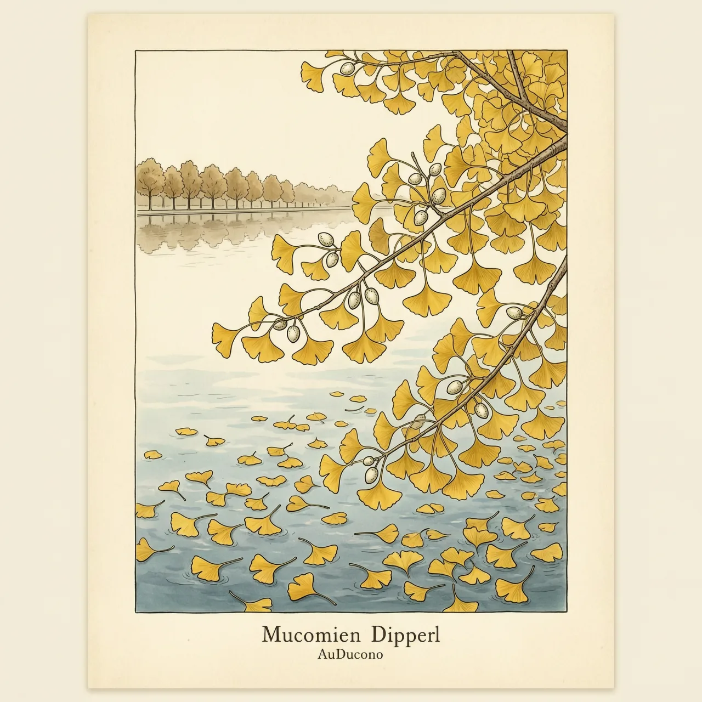
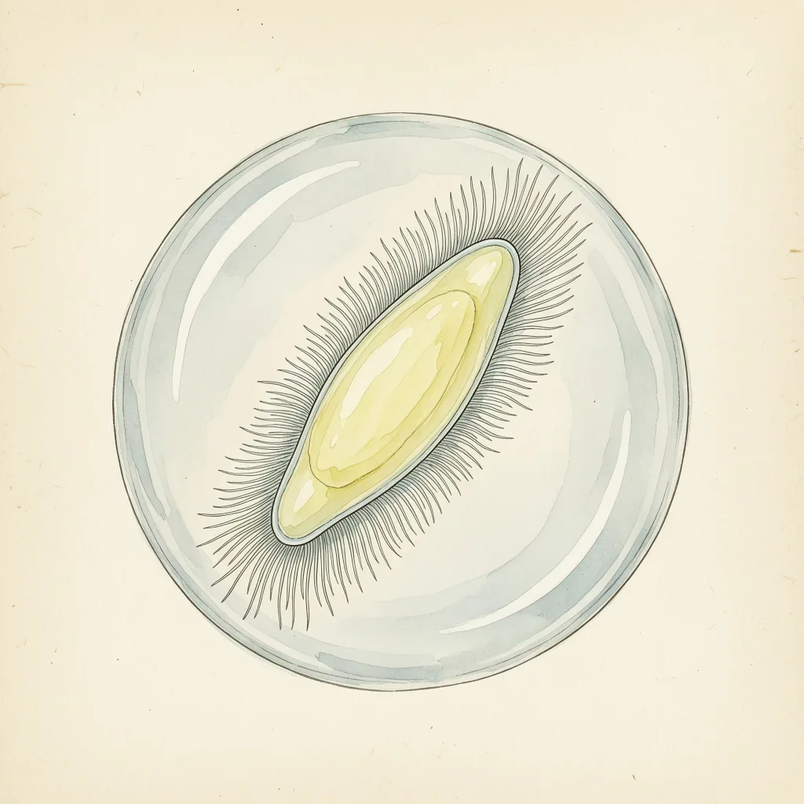

银杏门最后的成员，仍在用祖先游泳的姿态繁殖

长得极慢、叶片坚韧、病虫害少，单体寿命可达千年，一套叶型撑了2.7亿年
受精要精子在水滴里游泳，效率远逊花粉管；同门在被子植物崛起后全数灭绝，只剩一种
1896年，日本植物学家平濑作五郎透过显微镜观察载玻片上的一滴水，看到一个前端带一圈细密鞭毛的纺锤形细胞正在游动。这种档次的精子通常属于苔藓和蕨类——而他观察的材料，来自一棵会结种子、如今站在街边的树：银杏。
19世纪末，种子植物究竟有没有游动精子，是植物学界真正的悬案。平濑作五郎把取自银杏雌株的萌发花粉放在糖液里培养，观察到精子向颈卵器游去的过程。受精这件事，银杏的精子仍要像蕨类那样在水滴里游一段路，而不是像大多数种子植物那样靠花粉管把精子直接送抵卵细胞。这一观察在1896年公布，立刻引起广泛关注。
游动精子的麻烦在于受精必须有水：精子得等雨水或露水漫过胚珠，才能游到卵细胞旁边。而白垩纪崛起的裸子植物和被子植物换了条路，用花粉管把精子直接送达，受精不再依赖体外的水。银杏守着老办法，繁殖效率被全面甩开，同门的其他物种都在新生代灭绝，只剩它一种。它靠一副耐旱、寿命极长的身板，在东亚一隅熬了过来，弥补了繁殖上的短板。
第四纪冰期后，野生的银杏退缩到中国西部的少数避难所。1690年，德国植物学家肯普弗在日本的寺院里见到这棵树，把日语读音记进了后来的著作；他写下的拼法一般认为被后人误读，学名Ginkgo就这么定了下来。20世纪起，银杏因抗虫耐候被栽成欧亚与北美城市的行道树，秋天人们捡起树下发臭的「果实」，不知道那枚白色的核根本不是果，而是一颗裸露的种子。
